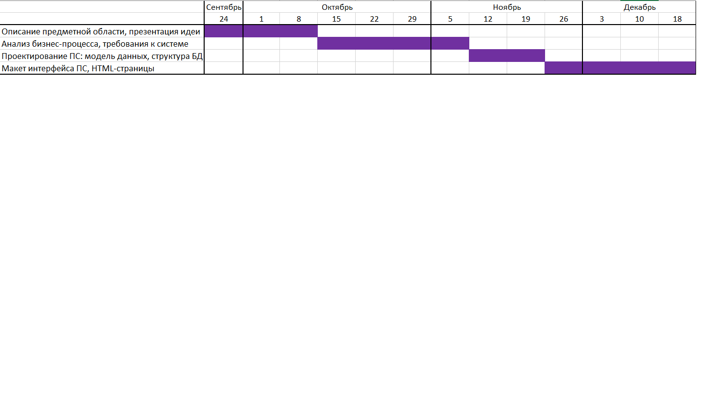

«Программная система для маркетплейса товаров»
Выполнил студент группы ПРИ-123
Голенкевич Д.А.
Создать прототип web-приложения маркетплейса для продажи и покупки товаров (в т.ч. винтажных и second-hand), с удобным каталогом, поиском, корзиной и личным кабинетом пользователя.
Задачи:
Стильный resale-концепт, винтажная эстетика
Бесплатная доставка от суммы заказа
Удобный каталог и фильтры
Узкая ниша — только одежда/аксессуары
Ограниченный функционал рекомендаций
Референс для визуального стиля и концепции маркетплейса.
3 of 9Огромная аудитория и объявления
Широкий охват категорий
Бесплатное размещение для физлиц
Перегруженный интерфейс
Риски мошенничества
Слабая модерация качества контента
Интеграция с Яндекс-экосистемой
Удобное мобильное приложение
Локализация и доставка
Преимущественно C2C, мало curation
Конкурент Avito — схожие недостатки
Экономят, ищут винтаж и уникальные вещи
Мотивация: экология, экономия, стиль
Хотят выгодно реализовать ненужные вещи
Мотивация: доход, освобождение пространства
Ищут редкие и винтажные товары
Мотивация: хобби, инвестиции
Ключевые подсистемы и функциональность:
| Подсистема | Функциональность |
|---|---|
| Каталог и товары | Список товаров, карточки, фильтры, категории, поиск |
| Корзина и заказы | Добавление в корзину, оформление заказа, история |
| Пользователи | Регистрация, авторизация, профиль, избранное |
| Администрирование | Управление товарами, модерация, статистика |
Стек: Java (Spring Boot), база данных, HTML/CSS/JavaScript (или Thymeleaf).
7 of 9| Основные проблемы | Решения в нашей системе |
|---|---|
| «Сложно найти нужный товар» | Удобный поиск и фильтры по категориям, цене, состоянию |
| «Не доверяю продавцам» | Профили, рейтинги, отзывы (опционально в прототипе) |
| «Неудобно оформлять заказ» | Простая корзина, оформление в несколько кликов |
| «Хочу сохранить понравившиеся» | Избранное, личный кабинет |

9 of 9